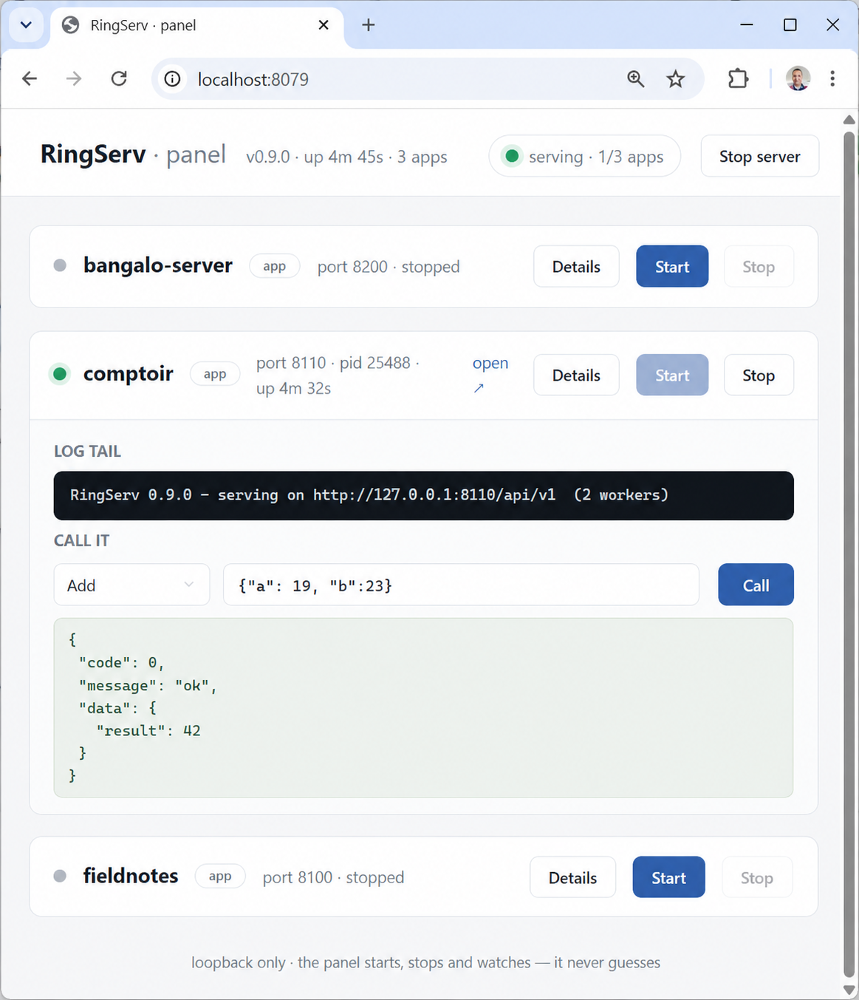

One static binary with everything inside: the web server, the Ring language, a SQL database, a JavaScript engine. Write clear, readable services. Nothing to install, nothing to configure.

ringserv panel .
Start hereA greeting endpoint: read a name, default it, answer politely. Below are the two versions of the very same service — line for line, same length, same order — so the only thing that differs is how the logic reads.
The JavaScript version starts from npm install express and a
node_modules directory; the Ring version starts from one downloaded file.
const express = require("express") const app = express() app.use(express.json()) app.post("/api/greet", (req, res) => { let name = req.body.name if (!name) { name = "stranger" } res.json({ message: "Ahlan, " + name + "!" }) }) app.listen(8080)
RingServ([ :port = 8080, :services = [ :hello = [ :greet = func aReq { cName = aReq[:payload][:name] if cName = "" cName = "stranger" ok return Reply(:ok, [ :message = "Ahlan, " + cName + "!" ]) } ] ] ])
No routes to design, no verbs to choose, no body
parser to remember: every service answers at /api/v1 as
service.action(payload) — the same call shape RingScript pages already speak.
That is the whole trick — and it holds as the application grows.
The web server, the Ring VM, a SQL database and a JavaScript engine, compiled into one static binary per platform. Install is: download it, run it.
A mistake in a service returns a clean answer with its real line number, and the server keeps serving. Thousands of hostile requests later, memory is still flat.
A service can be a .js file. It follows the same rules as a Ring one,
and each side calls the other by name. The seam is thin — and optional.
Describe your tables, write ordinary SQL, and say what each request must contain — bad requests are turned away before your code ever sees them.
A journal you can only add to. Each entry is sealed with a fingerprint of the one before it — if anyone edits the past, the server points at exactly where.
Declare where each service and table lives — page, server, or both with sync. Move one between them by changing a word, not the application.
The same application runs wherever a file can run: Linux, macOS and Windows servers, a laptop under the counter, or a small ARM board like a Raspberry Pi — one downloaded file each, nothing to install around it. Mobile phones are next on the public plan, and so is deploying agents — long-running workers with journal-backed memory, the hosting side of Softanza PI. The plan is public precisely so you can see what is real today and what is next.
RingScript runs Ring in the browser; RingServ runs the same VM on the
server — and both speak the same service.action(payload) call. Declare
your services once, and move one between page and server by changing a single word.
Offline-first sync included.
"It runs Ring" is checked, not claimed — against the native interpreter, on three platforms, on every change. The losses are published with the wins.
For HTTPS, put a proxy in front — RingServ refuses a public address until you confirm one is there. A few features are deliberate subsets that refuse the rest by name. And 0.9 means ready to use, not finished. Each of these has its plain answer in the Q&A.
One binary, zero dependencies — because the dependencies are inside,
vendored and pinned, and their authors deserve their names on the front page:
Mahmoud Fayed and the Ring team's
Ring VM — the heart of
the whole thing; Youssef Saeed's
tree-sitter-ring
grammar, which powers ringserv check; Karl Seguin's
http.zig
server core; D. Richard Hipp's
SQLite; the
QuickJS-ng
engine descended from Fabrice Bellard's QuickJS; and the
Zig language that compiles
them all into one file. The exact pinned versions are in
vendor/VENDOR.md.